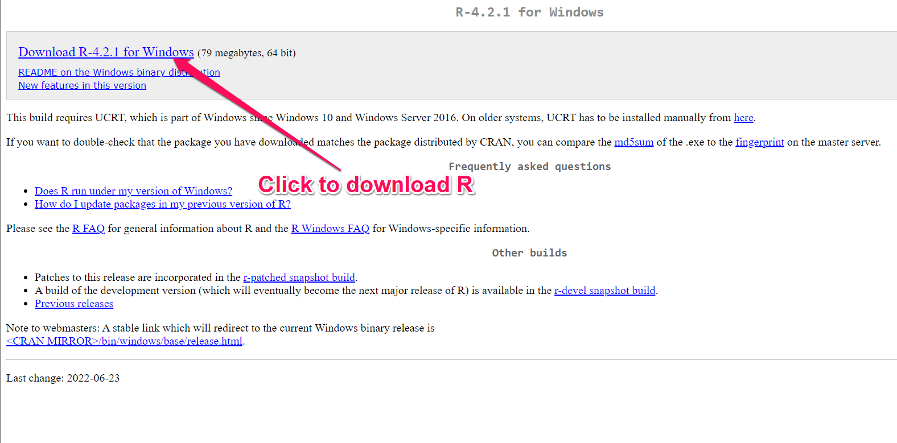

You are here to get step-by-step tutorials to install R.
In this article, you will learn how to install R language and RStudio IDE (on your system: Windows, or Linux OS).

What is R?
R is an open source language which was designed and built for the statistical computing and graphics. It can run on any OS platform and has a very large, vibrant community. R is a popular language for Data Science and Statistics.
It has a large number of packages for statistical modeling, data manipulation, Analysis and making high-quality graphics.
Here, you can get an overview of R Programming Language.
What is RStudio?
RStudio is an integrated development environment (IDE) for R users. It is a great IDE which has features like R console, code editor, tools for plotting, history, debugging and workspace management.
Install R & RStudio in Windows

Download R installer from Windows
Open the installer, Leave all default settings in the installation options. Choose the 64bit or 32 bit as your system.
Download the Windows RStudio installer
Run the installer leave all the default settings in installation options.
Open RStudio or Rgui to play with R programming.
Install R & RStudio in Linux
Open the Terminal and type following command for installing R
Install R in Ubuntu / Debian
{} sudo apt-get install r-base r-base-dev sudo apt-get update
Fedora
{} sudo yum install R sudo yum update
Download the Rstudio Desktop Installer for your Linux distribution from https://www.rstudio.com/products/rstudio/download/#download
Run the installer leave all the default settings in installation option
Open Rstudio or use sudo -i R in terminal and play with R language
Install RStudio Server (Linux)
There is another Browser-based IDE called Rstudio server. It provides the service same as the desktop Rstudio and can be used from the remote Linux server. Rstudio server is only available for Debian and Ubuntu.
Install R Server
Open a terminal and use the following command
#64 bit sudo apt-get install gdebi-core wget https://download2.rstudio.org/rstudio-server-1.1.456-amd64.deb sudo gdebi rstudio-server-1.1.456-amd64.deb
32bit
sudo apt-get install gdebi-core wget https://download2.rstudio.org/rstudio-server-1.1.456-i386.deb sudo gdebi rstudio-server-1.1.456-i386.deb
- Open Browser and use localhost:8787 in URL tab
- Sign in to RStudio server using Username and password
Install R Packages
After you have installed R and RStudio, you can now install R packages easily.
- First, go to start menu and open RStudio.
- Below, you will see the console, where you need to enter:
{} install.packages(“tidyverse”) install.packages(“rmarkdown”) install.packages(“readxl”)